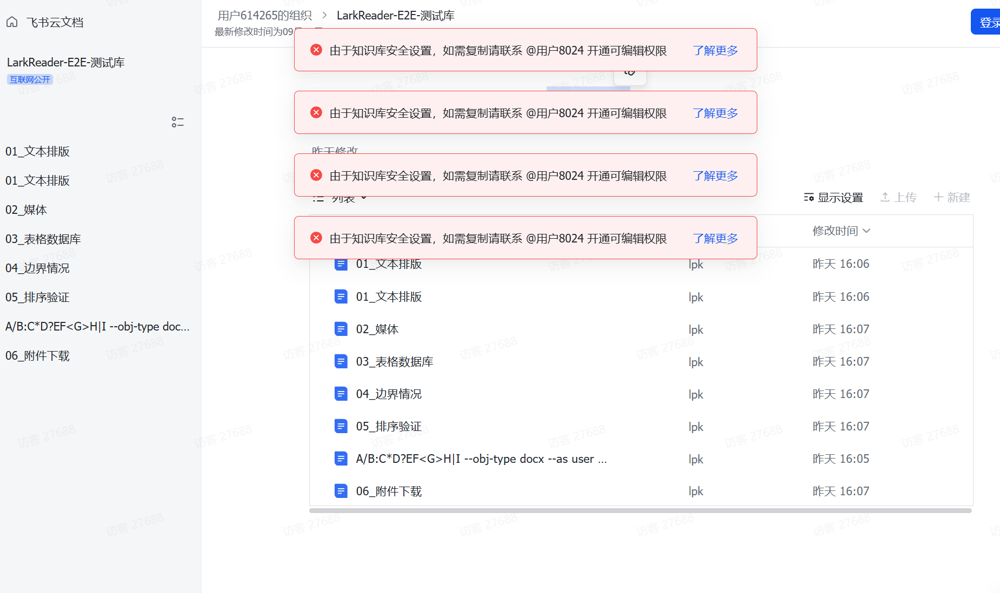
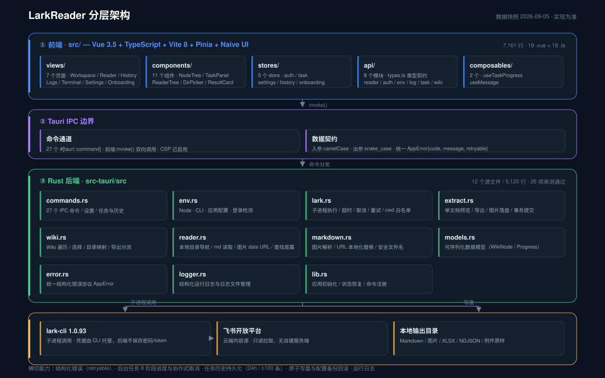

数据自主 / 团队留档
把整个知识库一键导出到本地，长期保留属于你自己的副本。团队成员更替、项目交接、内部知识沉淀，都能从容留存。
飞书很好，但长文档在线读起来累，也没法离线。把工作资料备份成通用格式、用自己习惯的方式阅读这件事，市面上没人替你做。
把整个知识库一键导出到本地，长期保留属于你自己的副本。团队成员更替、项目交接、内部知识沉淀，都能从容留存。
把 Wiki 同步成本地 Markdown，地铁、飞机、客户现场都能看。结构、附件、链接全保留。
导出 Bitable / Sheet 为结构化 NDJSON / XLSX，可直接接入 Pandas / Excel / BI 工具。
金融、法律、医疗团队需要长期归档。LarkReader 生成的目录结构便于二次检索与脱敏。
先看日常使用的不便之处，再用真实下载产物证明 LarkReader 能解决到什么程度。
在浏览器里看飞书知识库，常常是这样的体验：

备份到本地后用 LarkReader 阅读：一个窗口、左目录右正文、附件集中、断网可读、全文可搜。
docs/e2e-download-case/ 是那次导出的完整产物，开源在 GitHub 上：
├─ 01_文本排版/ │ └─ 00_01_文本排版.md ├─ 01_文本排版 (2)/ ← 同名自动编号，不互相覆盖 │ ├─ 00_一级标题：标题与列表.md │ ├─ 01_代码块与引用.md │ └─ 02_表格与任务列表.md ├─ 02_媒体/ │ ├─ 00_图片文档.md │ ├─ 00_图片文档_images/ │ │ └─ img_01.png · img_02.png · img_03.png │ └─ 01_文件附件文档.md ├─ 03_表格数据库/ │ ├─ 00_员工花名册.xlsx │ └─ 01_项目看板/ │ ├─ 01_Table.ndjson │ └─ 01_Table.manifest.json ├─ 04_边界情况/ │ ├─ 00_空文档.md │ └─ 01_超长标题测试…….md ← 100 字符自动截断 ├─ 05_排序验证/ │ ├─ 00_甲.md │ ├─ 01_乙.md │ └─ 02_丙.md └─ 06_附件下载/ ├─ 01_data.csv … 05_notes.txt ├─ 08_性能报告(终版).pdf ├─ 13_附件包.zip ├─ 14_sample-doc.docx · 15_sample-sheet.xlsx · 16_sample-deck.pptx └─ … 共 17 个附件，全部原样字节
这不是示意图 —— 这就是 docs/e2e-download-case/ 落盘后的真实目录：断网后用 LarkReader 的「本地阅读」直接打开，目录、排序、图片、附件全部还在。
整棵目录树按飞书层级与排序落盘，编号前缀即子节点树序，zip 后可直接离线浏览整本知识库。
不像"导出整个 Wiki"那种粗暴做法，LarkReader 用树形勾选界面让你精准指定要保留的节点。Doc / Sheet / Bitable / File / Folder 全部支持。
从扫树 → 拉取 → 转 Markdown → 下载图片 → 写盘，全程阶段条 + 当前文档 + ETA，不再"假死"。
默认 4 并发温和模式；网络好的拉到 16、32 飞起。失败自动重试，进度条不卡。
基于 Tauri 2 + Rust，体积小、启动快。Windows / macOS / Linux 三端原生，无浏览器依赖、无云中转。
所有 token、所有导出文件、所有日志都在你的机器上。没有"我们的服务器"可以看你文档。
设置页一键「检查更新」；下载进度可见、公钥签名校验；Windows 装好自动接管、macOS/Linux 装好自动重启。启动时也会静默提示一次，不打扰。
支持 Wiki URL 或单篇文档 URL。首次使用需要扫码登录飞书账号，整个 token 本地保存。
树形界面多选，支持全选 / 反选 / 按类型筛选。右侧实时显示已选数量与类型分布。
选好本地输出目录，按"开始"即可。进度条、阶段、ETA、当前文档全程可见。完成自动打开目录。

飞书 Open Platform 提供 OAuth + 内容 API；Tauri 后端在本地 Rust 进程里完成权限校验、并发调度、Markdown 转换、图片下载与落盘；前端是 Vue 3 + Naive UI 渲染的控制台。
open.feishu.cnGitHub Releases 提供 Windows MSI / macOS DMG / Linux AppImage / Linux deb。
从 GitHub Releases 下载 ↗当前版本 v0.1.0 · 2026-09 发布
需要 Rust stable 与 Node 22+：
git clone https://github.com/<user>/larkreader.git
cd larkreader
npm install
npm run tauri build产物在 src-tauri/target/release/bundle/。
启动后看到"LarkReader · 飞书文档导出工具"窗口即成功。
完全免费、开源、GPL-3.0 协议。你也可以用源码做二次开发（注意 GPL 传染性）。
不会。LarkReader 不提供云服务、不维护服务器、不收集任何使用数据。所有 token、所有导出文件、所有日志都在你自己的机器上。唯一的网络流量是 LarkReader 直接调用飞书 Open API。
Doc（旧文档 / 新文档）、Sheet、Bitable、File、Folder。Doc 支持富文本、表格、代码块、图片附件；Sheet 导出 XLSX，Bitable 导出 NDJSON + manifest；File 按原始格式下载到本地。
会的。LarkReader 自动管理 user_access_token，过期前自动用 refresh_token 续命，不需要你每次扫码。
会。每次启动会静默检查一次 GitHub Releases，发现新版就在顶部提示一次（每进程只提示一次，避免打扰）；想立刻检查也可以在「设置 → 软件更新」一键启动，下载进度可见，装好后 Windows 自动接管、macOS / Linux 自动重启。
不会。LarkReader 只通过飞书官方 Open API 与官方 lark-cli，用你自己的授权账号读取你本来就有权限查看的内容，相当于把「在线阅读」变成「本地阅读」。它不破解、不绕过任何权限机制。导出内容的版权归原作者所有，请仅将结果用于个人学习与工作备份，并遵守飞书用户协议及相关法律法规。
请到 GitHub Repo 的 Issues 区提 issue；想动手改源码的可以 fork 后提 PR，详细流程见 CONTRIBUTING.md。